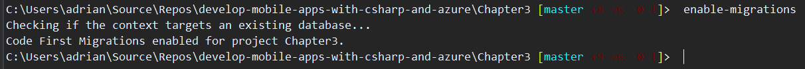
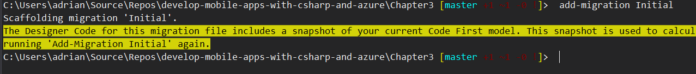
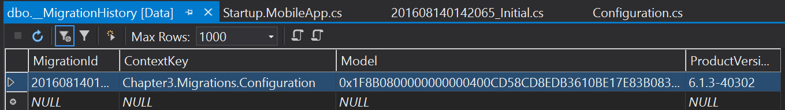
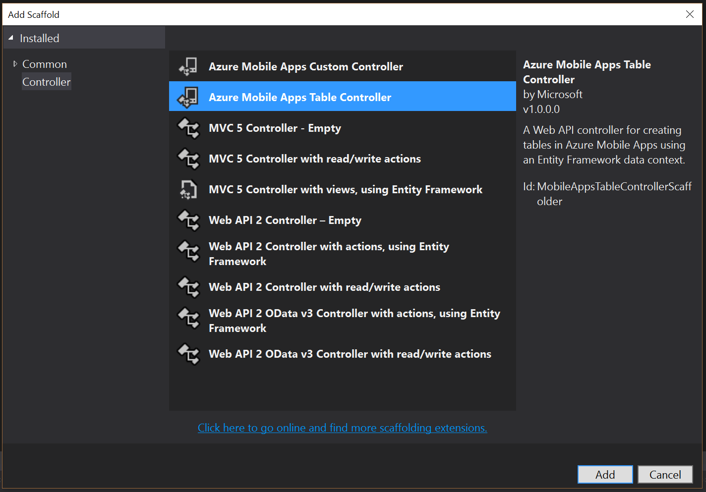
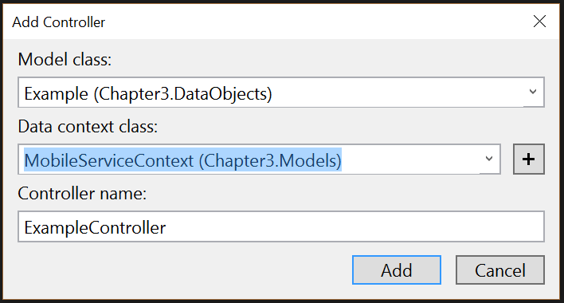
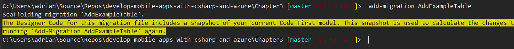
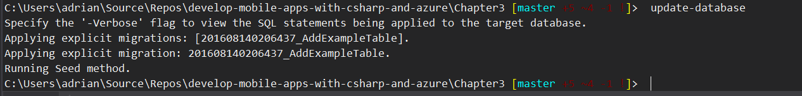
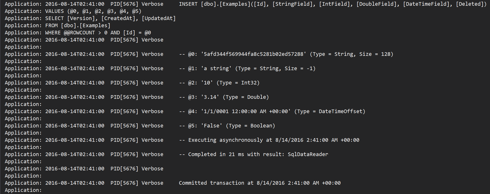
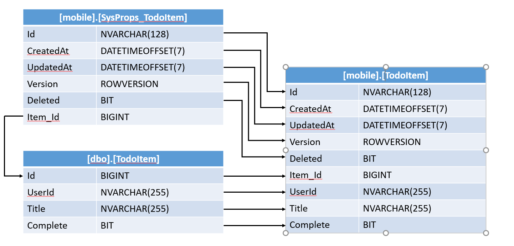

Implementing Table Controllers¶
The central component for providing a table endpoint on the Azure App Service side of things occurs in your backend project. You must implement a Table Controller. This is a specialized version of an ApiController that has some similarities with an ODataController. However, it has its own base class and the Azure Mobile Apps SDK simplifies the process of making them.
Implementing Code First Migrations¶
Before we can get started with adding another table controller, we have to deal with modifications to our database schema. The default code for Azure Mobile Apps will deploy the configured schema only if the database is empty. If the database is not empty, you have to do extra work. This extra work involves updating the schema of your database.
There are two methods of doing this. The first we will consider is Code First Migrations. With code first migrations, we construct a code file whenever we need to change the database. Don't worry - it's done for us. Later on, we will consider Database First. With database first, we adjust the database schema manually, then write C# models to reflect that change.
Nothing causes more headaches in an Azure Mobile Apps backend than code-first migrations. A code-first
migration is simply a set of configuration commands that updates the database to support the new
database model. If you try to publish this application, you will see an InvalidOperationException
and your service will likely crash. If you manage to trap the error, it will say The model backing
the 'MobileServiceContext' context has changed since the database was created. Consider using Code First
Migrations to update the database. That's fairly specific and is common to all applications based
on Entity Framework that use code-first models.
Tip
There is an alternative here called Database First Models. In this alternative, you create the database first then create the models to match. However, Azure Mobile Apps requires specific configuration of mobile tables that you will need to take care of. See the section on using existing SQL tables later on for details.
The first step is to enable migrations. Go to View -> Other Windows -> Package Manager Console.
This window will generally appear in the same place as your Output and Error List windows at the bottom
of the screen. Type enable-migrations in it:

Check out the Migrations folder that has just been created to hold the code-first migrations. An initial
Configuration.cs object will be added to this folder that describes the basic configuration. We also need
to create an Initial migration that represents the current state of the database. We can do this with the
command add-migration Initial.

Tip
If you have multiple projects in your solution, you may need to add -Project _projectname_. For example,
add-migration -project Chapter3 Initial. This applies to all the migration commands you execute in the
Package Manager Console.
The initial migration creates a few files in the Migrations folder that represent the current state of
affairs for the database. These easily recognized by a combination of the current date and the name of the
migration. Code First Migrations can be applied manually or automatically. I personally prefer the automatic
method. To implement automated Code First Migrations, edit the App_Start\Startup.MobileApp.cs file:
public static void ConfigureMobileApp(IAppBuilder app)
{
var httpConfig = new HttpConfiguration();
var mobileConfig = new MobileAppConfiguration();
mobileConfig
.AddTablesWithEntityFramework()
.ApplyTo(httpConfig);
// Automatic Code First Migrations
var migrator = new DbMigrator(new Migrations.Configuration());
migrator.Update();
app.UseWebApi(httpConfig);
}
We have replaced the DbInitializer() (which was the method that created the database for us) with the
automatic database migrator code. There is one issue that will cause some problems. We are no longer using
a database initializer. The database initializer is the single line of code we just replaced that creates
the database tables with the appropriate triggers. This means that the special system columns will no longer
be wired up to update their values automatically. We can fix that by configuring the SqlGenerator in
Migrations\Configuration.cs:
public Configuration()
{
AutomaticMigrationsEnabled = false;
SetSqlGenerator("System.Data.SqlClient", new EntityTableSqlGenerator());
}
Since we are not using a database initializer, our seed data has also gone. You may as well delete the
MobileServiceInitializer class in the App_Start\Startup.MobileApp.cs as it isn't doing anything
any more. You can move the seed data to the Migrations\Configuration.cs file though:
namespace Chapter3.Migrations
{
using System;
using System.Collections.Generic;
using System.Data.Entity.Migrations;
using DataObjects;
using Microsoft.Azure.Mobile.Server.Tables;
internal sealed class Configuration : DbMigrationsConfiguration<Chapter3.Models.MobileServiceContext>
{
public Configuration()
{
AutomaticMigrationsEnabled = false;
SetSqlGenerator("System.Data.SqlClient", new EntityTableSqlGenerator());
}
protected override void Seed(Chapter3.Models.MobileServiceContext context)
{
List<TodoItem> todoItems = new List<TodoItem>
{
new TodoItem { Id = Guid.NewGuid().ToString(), Text = "First item", Complete = false },
new TodoItem { Id = Guid.NewGuid().ToString(), Text = "Second item", Complete = false }
};
foreach (TodoItem todoItem in todoItems)
{
context.Set<TodoItem>().Add(todoItem);
}
base.Seed(context);
}
}
}
The contents of the Seed method are a cut-and-paste from the MobileServiceInitializer version.
If all goes well, you can clear your database (or delete it and re-create it), then publish this project
and do a GET of the /tables/todoitem endpoint. You should still see your data. You should do a little
more investigation however.
- Open the database in the SQL Server Object Explorer.
- Expand the Tables node.
- Right-click on the dbo.__MigrationHistory table and select View Data.

There should be one row with a name that indicates it is the initial migration.
The final step is to apply the migration to the local system. In the Package Manager Console, enter
the command update-database to apply the existing migration.
Adding a SQL Table Controller¶
Before we can use a table controller, we need to add one. This has three steps:
- Create a Data Transfer Object (DTO)
- Create a Table Controller
- Create a Code-First Migration
Creating a Data Transfer Object¶
A Data Transfer Object (or DTO as it is commonly known) is the wire representation of the model for your
table. It must inherit from a concrete implementation of ITableData. The Azure Mobile Apps SDK includes
EntityData for this reason. EntityData is a concrete implementation that works with Entity Framework.
Warn
You can't just assume EntityData will work with other data stores. There are Entity Framework specific attributes decorating the properties for EntityData that will likely be different for other stores.
The default Azure Mobile Apps project that is supplied with the Azure SDK provides a folder for storing
DTOs called DataObjects. Let's create a DTO by right-clicking on the DataObjects folder, then
using Add -> Class...:
using System;
using Microsoft.Azure.Mobile.Server;
namespace Chapter3.DataObjects
{
public class Example : EntityData
{
public string StringField { get; set; }
public int IntField { get; set; }
public double DoubleField { get; set; }
public DateTimeOffset DateTimeField { get; set; }
}
}
Tip
Don't call your model SomethingDTO. This ends up as a /tables/somethingDTO endpoint and a SomethingDTO
table in your database. Just call it Something. All the names will then line up properly.
I've included several field types, including a complex type. The basic requirement for a field is that it must be serialized into a simple JSON type during transfer between the server and the mobile client. Complex types (that is, any type that can be serialized to an object or array) will always require special handling and may not be able to be used at all.
Create a Table Controller¶
Visual Studio for Windows (with the Azure SDK) provides some help in creating a table controller. Right-click on the Controllers node and select Add -> Controller....

Visual Studio provides scaffolding for a new table controller. Select it and then click on Add.

The dialog asks for the model (which is actually a DTO) and the data context (which is already created). Once you select the model, the controller name is created for you. You can change it if you like, but it's common practice to not do this.
Once the scaffolding is finished, you can look at your newly created table controller. We do want to do one change. We want to enable soft delete so that our table controller supports offline sync scenarios properly. To do this, go into the Initialize() method and change the constructor of the EntityDomainManager. The completed table controller looks like this:
using System.Linq;
using System.Threading.Tasks;
using System.Web.Http;
using System.Web.Http.Controllers;
using System.Web.Http.OData;
using Microsoft.Azure.Mobile.Server;
using Chapter3.DataObjects;
using Chapter3.Models;
namespace Chapter3.Controllers
{
public class ExampleController : TableController<Example>
{
protected override void Initialize(HttpControllerContext controllerContext)
{
base.Initialize(controllerContext);
MobileServiceContext context = new MobileServiceContext();
DomainManager = new EntityDomainManager<Example>(context, Request, enableSoftDelete: true);
}
// GET tables/Example
public IQueryable<Example> GetAllExample()
{
return Query();
}
// GET tables/Example/48D68C86-6EA6-4C25-AA33-223FC9A27959
public SingleResult<Example> GetExample(string id)
{
return Lookup(id);
}
// PATCH tables/Example/48D68C86-6EA6-4C25-AA33-223FC9A27959
public Task<Example> PatchExample(string id, Delta<Example> patch)
{
return UpdateAsync(id, patch);
}
// POST tables/Example
public async Task<IHttpActionResult> PostExample(Example item)
{
Example current = await InsertAsync(item);
return CreatedAtRoute("Tables", new { id = current.Id }, current);
}
// DELETE tables/Example/48D68C86-6EA6-4C25-AA33-223FC9A27959
public Task DeleteExample(string id)
{
return DeleteAsync(id);
}
}
}
Creating a Code-First Migration¶
You must add a code first migration to update the database when it is published. Use the add-migration command in the Package Manager Console. The add-migration command will request a name - it just has to be unique, but it's a good idea to make the name descriptive:

You should also use update-database to apply the change to the local database (if any):

Once this is done, you can publish the project. Right-click on the project and select Publish.... Once the project is published, you should be able to send a query to the /tables/example endpoint using Postman and get an empty array. You should also be able to insert, update and delete entities as you can with the TodoItem table.
Handling Publish Failures¶
Sometimes, the publish fails. It seems that whenever I start with code-first migrations, my publish fails. I get a nice error screen, but no actual error. At least half the time, the problem is not my code-first migration, but something else. For instance, one of the things I tend to do is update my NuGet packages. This inevitably breaks something.
Fortunately, once the error message is known, it's generally trivial to correct the error. You can turn custom error messages off (and thus expose the original error message) by editing the Web.config file. Locate the <system.web> section and add the <customErrors mode="Off"/> line:
<system.web>
<httpRuntime targetFramework="4.6" />
<compilation debug="true" targetFramework="4.6" />
<customErrors mode="Off" />
</system.web>
Then republish your project and the response from the server is much more informative.
Turning on Diagnostic Logs¶
You can log all the SQL statements that Entity Framework executes on your behalf by adding a Database Log. Edit the Models\MobileServiceContext.cs file:
public class MobileServiceContext : DbContext
{
private const string connectionStringName = "Name=MS_TableConnectionString";
public MobileServiceContext() : base(connectionStringName)
{
Database.Log = s => WriteLog(s);
}
public void WriteLog(string msg)
{
System.Diagnostics.Debug.WriteLine(msg);
}
protected override void OnModelCreating(DbModelBuilder modelBuilder)
{
modelBuilder.Conventions.Add(
new AttributeToColumnAnnotationConvention<TableColumnAttribute, string>(
"ServiceTableColumn", (property, attributes) => attributes.Single().ColumnType.ToString()));
}
public DbSet<DataObjects.TodoItem> TodoItems { get; set; }
public DbSet<DataObjects.Example> Examples { get; set; }
}
You have to use a real method. System.Diagnostics.Debug is removed from the context when DEBUG is not defined, so you can't just use it directly. Using an interim method works around that problem. Azure App Service captures the output from the console and places it into the log viewer for you.
To turn on diagnostic logging:
- Log in to the Azure Portal.
- Click on App Services then your App Service.
- Find Diagnostic Logs in the list of settings (you can use the search box).
- Turn on Application Logging (Filesystem) with a level of Verbose.
- Click on Save.
To view the diagnostic logs in the portal, find Log Stream in the list of settings (again, you can use the search box). You can also get the diagnostic logs within Visual Studio.
- Open the Server Explorer.
- Expand Azure, App Service, your resource group.
- Right-click on the your App Service and select View Streaming Logs.

Using an existing SQL Table¶
There are times when a "Database First" approach is needed. If you are trying to expose an existing SQL database table, for example, you want to use a "Database First" approach. You may also like the separation of the database table from the mobile system columns.
Warn
The Database First and Code First approaches to Entity Framework are mutually exclusive. You need to decide which one you want to use and stick with it.
To use "Database First", you first set up the database. Then you create a Model and update the DbContext object. For example, our Example model from before can be represented by the following database schema:
CREATE TABLE [dbo].[Examples] (
-- This must be a string suitable for a GUID
[Id] NVARCHAR (128) NOT NULL,
-- These are the system properties
[Version] ROWVERSION NOT NULL,
[CreatedAt] DATETIMEOFFSET (7) NOT NULL,
[UpdatedAt] DATETIMEOFFSET (7) NULL,
[Deleted] BIT NOT NULL
-- These are the properties of our DTO not included in EntityFramework
[StringField] NVARCHAR (MAX) NULL,
[IntField] INT NOT NULL,
[DoubleField] FLOAT (53) NOT NULL,
[DateTimeField] DATETIMEOFFSET (7) NOT NULL,
);
CREATE CLUSTERED INDEX [IX_CreatedAt]
ON [dbo].[Examples]([CreatedAt] ASC);
ALTER TABLE [dbo].[Examples]
ADD CONSTRAINT [PK_dbo.Examples] PRIMARY KEY NONCLUSTERED ([Id] ASC);
CREATE TRIGGER [TR_dbo_Examples_InsertUpdateDelete] ON [dbo].[Examples]
AFTER INSERT, UPDATE, DELETE AS
BEGIN
UPDATE [dbo].[Examples]
SET [dbo].[Examples].[UpdatedAt] = CONVERT(DATETIMEOFFSET, SYSUTCDATETIME())
FROM INSERTED WHERE inserted.[Id] = [dbo].[Examples].[Id]
END;
The system properties are added to the schema. We can (and do) use a trigger to update the UpdatedAt column when the data is updated. Placing this logic within the SQL Server schema definition means we can use this SQL table outside of the mobile context and it will still work for the mobile application.
Info
We use the CreatedAt field to create a clustered index. In older versions of SQL Server, this was required to increase performance on the table as a whole. It may not be required now and may be removed in future versions of Azure Mobile Apps.
If you can update an existing table to match this schema, then you should do so. Note that the Id field is
not set by default. If you want to set a default, set it to NEWID():
ALTER TABLE [dbo].[Examples]
ALTER COLUMN [Id] SET DEFAULT CONVERT(NVARCHAR(128), NEWID());
Once you have set up the database and created the models, you must also turn off the database initializer.
This is done in App_Start\Startup.MobileApp.cs:
public static void ConfigureMobileApp(IAppBuilder app)
{
var httpConfig = new HttpConfiguration();
var mobileConfig = new MobileAppConfiguration();
mobileConfig
.AddTablesWithEntityFramework()
.ApplyTo(httpConfig);
// Automatic Code First Migrations
// var migrator = new DbMigrator(new Migrations.Configuration());
// migrator.Update();
// Database First
Database.SetInitializer<MobileDbContext>(null);
app.UseWebApi(httpConfig);
}
There are a lot of times when the existing table is not suitable for this sort of schema adjustment. The primary reason will be that the existing table has an auto-incrementing integer Id column and you can't change that. Quite often, I see developers needing to integrate the SQL schema of an existing application like a Customer Relationship Management system with this constraint, for example.
Let's take an example. Suppose you have a table called [dbo].[TodoItems]. This is fairly basic and defined like this:
CREATE TABLE [dbo].[TodoItems] (
[id] BIGINT NOT NULL IDENTITY(1,1) PRIMARY KEY,
[UserId] NVARCHAR(255) NOT NULL,
[Title] NVARCHAR(255) NOT NULL,
[Complete] BIT
);
This is the sort of SQL table that is very common within existing web applications, for instance. We have an auto-incrementing id column and some fields. It isn't complex (no relationships, for example), so we don't have to worry about referential integrity of the table.
Tip
I recommend placing the "mobile views" that we will discuss below in a separate schema (for example,
[mobile]) so that they don't interfere with your existing database schema.
Let's take a look at creating a VIEW of the data that is "mobile ready". This is an Entity Relationship Diagram of what we are going to do:

we are going to create a separate table for the system properties, called [mobile].[SysProps_TodoItems].
This will hold the five fields that Azure Mobile Apps requires, plus a reference to the TodoItem id:
CREATE TABLE [mobile].[SysProps_TodoItems] (
[Id] NVARCHAR(128) CONSTRAINT [DF_todoitem_id] DEFAULT (CONVERT([NVARCHAR](255),NEWID(),(0))) NOT NULL,
[CreatedAt] DATETIMEOFFSET(7) CONSTRAINT [DF_todoitem_createdAt] DEFAULT (CONVERT([DATETIMEOFFSET](7),SYSUTCDATETIME(),(0))) NOT NULL,
[UpdatedAt] DATETIMEOFFSET(7) NULL,
[Version] ROWVERSION NOT NULL,
[Deleted] BIT DEFAULT ((0)) NOT NULL,
[Item_Id] BIGINT NOT NULL
PRIMARY KEY NONCLUSTERED ([id] ASC)
);
Then we will create a SQL VIEW that maps to this:
CREATE VIEW [mobile].[TodoItems] AS
SELECT
[mobile].[SysProps_TodoItems].[Id],
[mobile].[SysProps_TodoItems].[CreatedAt],
[mobile].[SysProps_TodoItems].[UpdatedAt],
[mobile].[SysProps_TodoItems].[Version],
[mobile].[SysProps_TodoItems].[Deleted],
[mobile].[SysProps_TodoItems].[Item_Id],
[dbo].[TodoItems].[UserId],
[dbo].[TodoItems].[Title],
[dbo].[TodoItems].[Complete]
FROM
[dbo].[TodoItems],
[mobile].[SysProps_TodoItems]
WHERE
[dbo].[TodoItems].[id] = [mobile].[SysProps_TodoItems].[Item_Id];
This view is still only a combination of the two tables. I want specific logic so that when a row
is changed (inserted, updated or deleted) in the [dbo].[TodoItems] table, a similar change is made
to the [mobile].[SysProps_TodoItems] table. This is achieved through the use of triggers:
CREATE TRIGGER
[dbo].[TRG_TodoItem_Insert]
ON
[dbo].[TodoItems]
AFTER
INSERT
AS BEGIN
INSERT INTO [mobile].[SysProps_TodoItems] ([Item_Id], [UpdatedAt])
SELECT inserted.id, CONVERT(DATETIMEOFFSET(7), SYSUTCDATETIME())
FROM inserted
END
GO
CREATE TRIGGER
[dbo].[TRG_TodoItem_Update]
ON
[dbo].[TodoItems]
AFTER
UPDATE
AS BEGIN
UPDATE
[mobile].[SysProps_TodoItems]
SET
[UpdatedAt] = CONVERT(DATETIMEOFFSET(7), SYSUTCDATETIME())
FROM
INSERTED
WHERE
INSERTED.id = [mobile].[SysProps_TodoItems].[Item_Id]
END
GO
CREATE TRIGGER
[dbo].[TRG_TodoItem_Delete]
ON
[dbo].[TodoItems]
AFTER
DELETE
AS BEGIN
DELETE FROM [mobile].[SysProps_TodoItems]
WHERE [Item_Id] IN (select deleted.id from deleted)
END
GO
Tip
You may want to set the Deleted flag to 1 (or true) in the Delete trigger. This will enable soft
delete on the system properties table, ensuring that mobile clients remove the row from their offline
cache.
Similarly, when changes are made by the mobile backend to the VIEW, we need to propagate those changes to the underlying tables. This is also done with triggers:
CREATE TRIGGER
[mobile].[TRG_Mobile_TodoItem_Insert]
ON
[mobile].[TodoItems]
INSTEAD OF
INSERT
AS BEGIN
DECLARE @userid AS NVARCHAR(255)
SELECT @userid = inserted.UserId FROM inserted
DECLARE @title AS NVARCHAR(255)
SELECT @title = inserted.Title FROM inserted
DECLARE @complete AS BIT
SELECT @complete = inserted.Complete FROM inserted
INSERT INTO
[dbo].[TodoItems] ([UserId], [Title], [Complete])
VALUES
(@userid, @title, @complete)
IF UPDATE(Id) BEGIN
DECLARE @itemid AS BIGINT
SELECT @itemid = @@identity
DECLARE @id AS NVARCHAR(255)
SELECT @id = inserted.Id FROM inserted
UPDATE [mobile].[SysProps_TodoItems] SET [Id] = @id WHERE [item_id] = @itemid
END
END;
GO
CREATE TRIGGER
[mobile].[TRG_Mobile_TodoItem_Update]
ON
[mobile].[TodoItems]
INSTEAD OF
UPDATE
AS BEGIN
DECLARE @id AS NVARCHAR(255)
SELECT @id = inserted.id FROM inserted
DECLARE @itemid AS BIGINT
SELECT @itemid = [item_id] FROM [mobile].[SysProps_TodoItems] WHERE [id] = @id
IF UPDATE(UserId) BEGIN
DECLARE @userid AS NVARCHAR(255)
SELECT @userid = inserted.UserId FROM inserted
UPDATE [dbo].[TodoItems] SET [UserId] = @userid WHERE [id] = @itemid
END
IF UPDATE(Title) BEGIN
DECLARE @title AS NVARCHAR(255)
SELECT @title = inserted.Title FROM inserted
UPDATE [dbo].[TodoItems] SET [Title] = @title WHERE [id] = @itemid
END
IF UPDATE(Complete) BEGIN
DECLARE @complete AS BIT
SELECT @complete = inserted.Complete FROM inserted
UPDATE [dbo].[TodoItems] SET [Complete] = @complete WHERE [id] = @itemid
END
IF UPDATE(deleted) BEGIN
DECLARE @deleted AS BIT
SELECT @deleted = inserted.deleted FROM inserted
UPDATE [mobile].[SysProps_TodoItems] SET [deleted] = @deleted WHERE [item_id] = @itemid
END
END
GO
CREATE TRIGGER
[mobile].[TRG_Mobile_TodoItem_Delete]
ON
[mobile].[TodoItems]
INSTEAD OF
DELETE
AS BEGIN
DECLARE @id AS NVARCHAR(255)
SELECT @id = deleted.id FROM deleted
DECLARE @itemid AS BIGINT
SELECT @itemid = [item_id] FROM [mobile].[SysProps_TodoItems] WHERE [id] = @id
DELETE FROM [dbo].[TodoItems] WHERE [id] = @itemid
DELETE FROM [mobile].[SysProps_TodoItems] WHERE [id] = @id
END
GO
A standard SQL view is read-only. We made the view read/write by using triggers to trap the call and replace it with two calls instead.
Warn
This version does not support soft delete. If you wish to support soft delete, set the
Deleted flag in the `[mobile].[SysProps_TodoItems] table instead of deleting the row.
Changing the Mobile Schema¶
We stored our mobile representation of the table in a different schema. Azure Mobile Apps looks for tables (and views) in the [dbo] schema by default. There are two places you can modify the schema that Entity Framework uses to access the database. The first is by changing the default schema that Entity Framework uses. This will affect all the tables that we are exposing via a table controller. This is done in the Models\MobileDbContext.cs class:
protected override void OnModelCreating(DbModelBuilder modelBuilder)
{
modelBuilder.HasDefaultSchema("mobile");
modelBuilder.Conventions.Add(
new AttributeToColumnAnnotationConvention<TableColumnAttribute, string>(
"ServiceTableColumn",
(property, attributes) => attributes.Single().ColumnType.ToString()
)
);
}
We can also do this on the model as an annotation. For example, here is the TodoItem model suitably adjusted:
using Microsoft.Azure.Mobile.Server;
using Newtonsoft.Json;
using System.ComponentModel.DataAnnotations.Schema;
namespace Backend.DataObjects
{
[Table("TodoItems", Schema="mobile")]
public class TodoItem : EntityData
{
public string UserId { get; set; }
public string Title { get; set; }
public bool Complete { get; set; }
}
}
Info
Entity Framework adds an s onto the end of the model to create the table name. If you have a model named TodoItem, the table is called TodoItems in the database. You can use this same annotation to adjust the table name if it is not to your liking.
Best Practices¶
Here is a summary of what I consider best practices for table controllers:
- Use Code First when you are in a green-field database situation.
- Use Database First when you have to integrate an existing database.
- Only expose the data that you need for the mobile client.
- Set up Automatic Code First Migrations as early as possible.
- Think about what happens to existing clients when you update the schema.
This last point is an important one. Let's say you have a v1 mobile client of your awesome mobile application. This works with v1 mobile backend. You've set up the schema and ensured that everything works. Then you want to release v2 mobile client. It has a new feature and needs some extra data. So you update to v2 mobile backend that provides that data.
You need to ensure that the schema changes provided by the v2 mobile backend are optional. In other words, the v1 mobile client can continue to work against the v2 mobile backend. You should test this case. Users do not upgrade instantly. In fact, many users don't upgrade at all. At every release of your app, you are going to have to ensure that ALL versions of your mobile client work against your mobile backend.